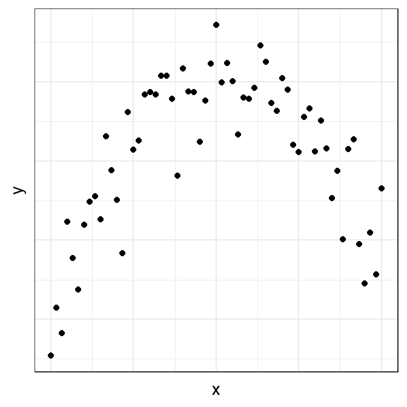
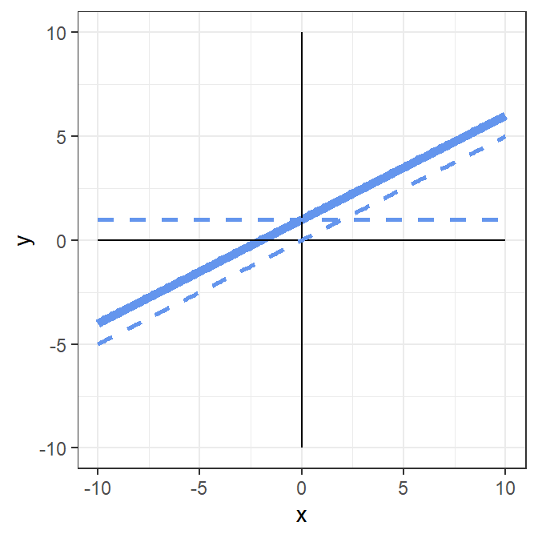
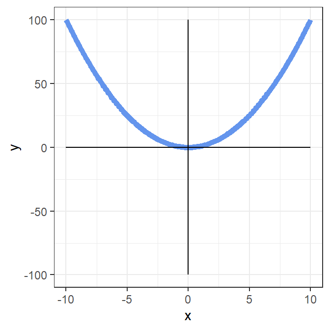
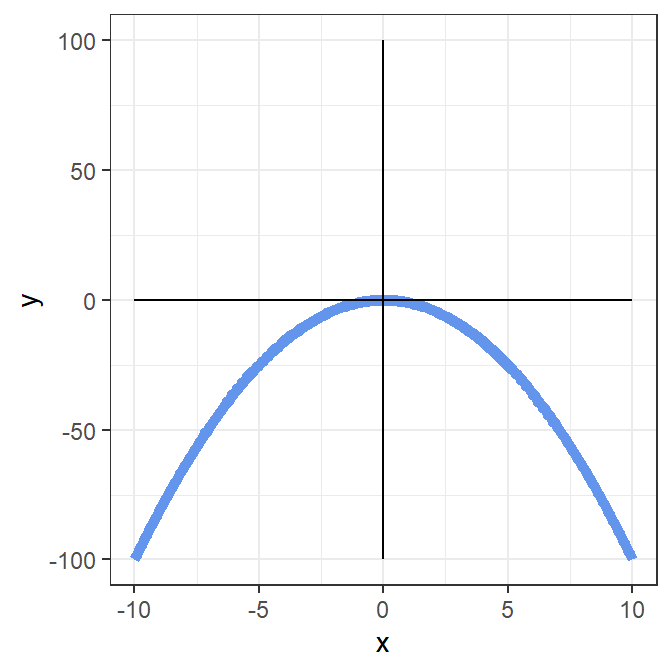
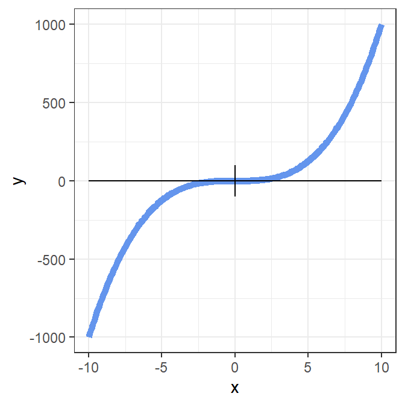
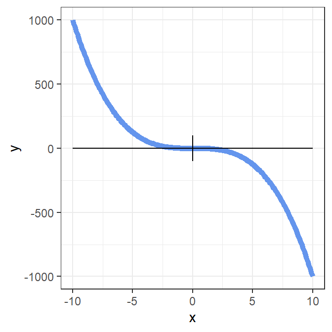
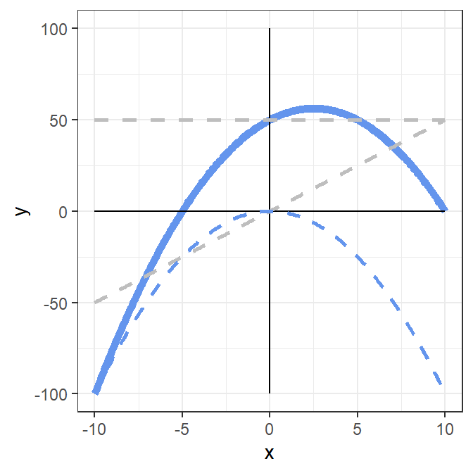
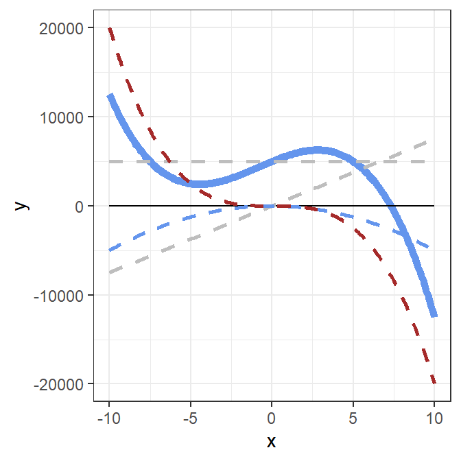

Polynomials
The regression models we have been fitting assume a linear (i.e., straight line) relationship between variables. However, variables may not always be related in a linear fashion.
Suppose variables x and y showed the following trend:

It is clear that this relationship would not be explained well by a straight line. We’d lose important information about the relationship if we only fit a straight line. A curve would be better.
We can fit a curve to the data by adding polynomial terms to the regression equation.
Polynomial means that a variable is raised to a particular power. For example:
\(x^2\) means x-squared, which is x-multiplied-by-x, or “x to the power of two”
\(x^3\) means x-cubed, which is x-multiplied-by-x-multiplied-by-x, or “x to the power of three”
If a model has a quadratic component it means it has an \(x^2\) term in the equation.
If a model has a cubic component it means it has an \(x^3\) term in the equation.
Constant
To see why this approach works, recall that lines can be represented by equations.
The equation \(y = 1 + 0.5(x)\) would be represented as follows:

We can think of this line as being made up of the constant and a linear component.
- The constant in this equation is indicated by the dashed horizontal line.
- The linear component to this equation 0.5(x) is indicated by the dashed slope line.
- The solid blue line is a combination of these two components.
It has no bends.
Quadratic
The equation \(y = x^2\) would be represented as follows:

To get each value of y, we square the value of x.
So, when x = -5, y is 25. And if x = -4, y = 16, and so on…
\(y = -x^2\), would look as follows:

Curves with quadratic components have one bend.
Cubic
The equation \(y = x^3\) would be represented as follows:

To get each value of y, we cube the value of x.
So, when x = -5, y is -125. And if x = -4, y = -64, and so on…
\(y = -x^3\), would look as follows:

Curves with cubic components have three bends.
Linear plus quadratic components
The equation \(y = 50 + 5(x) - x^2\) has
- a constant equal to 50
- a linear component 5(x)
- a quadratic component \(-x^2\):

The dashed lines on the plot indicate the intercept, linear component, and quadratic components of the equation. The solid line represents the equation.
Linear plus quadratic and cubic components
The equation \(y = 5000 + 750x - 50x^2 - 20x^3\) has
- a constant equal to 50
- a linear component 750x
- a negative quadratic component \(-50x^2\)
- a negative cubic component \(-20x^3\)

When we see any curve, it is possible to think of it as being composed of components like this.